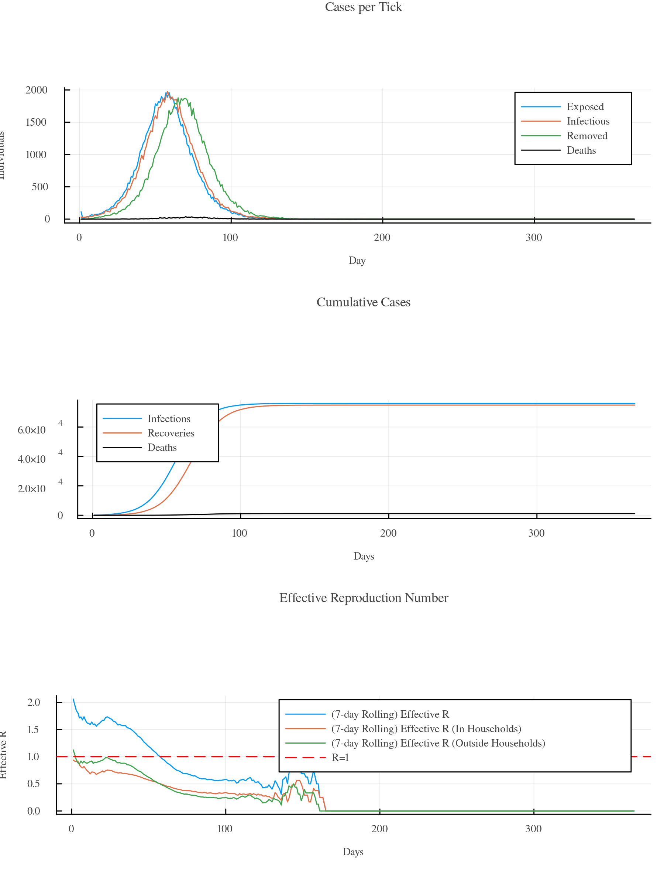
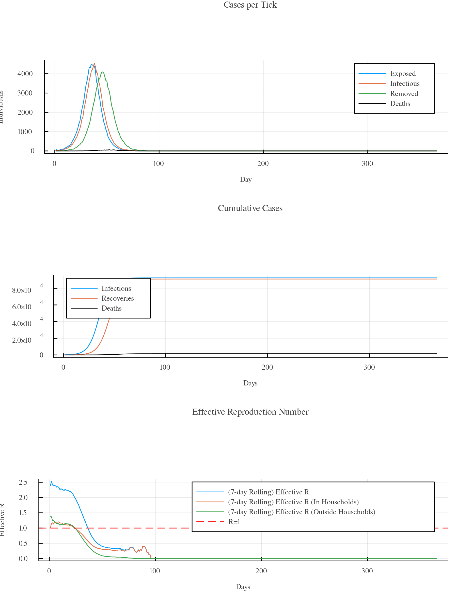
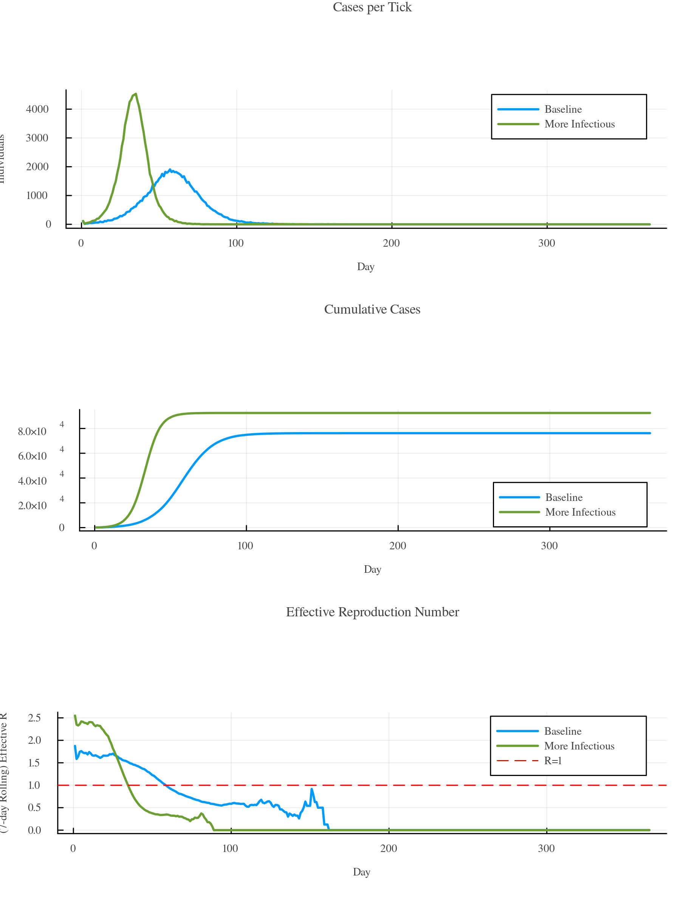
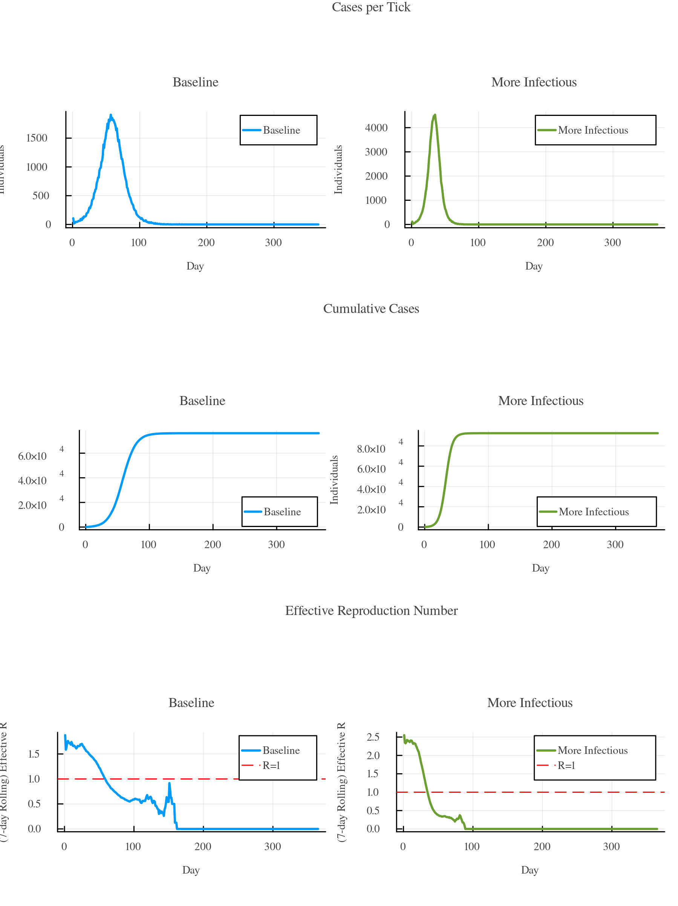
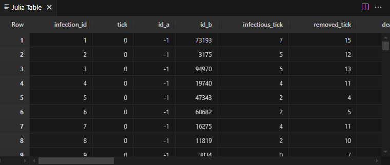

1 - Getting Started
Assuming you have Julia readily installed on your machine, getting GEMS is quite straight forward. Load the package manager and install the GEMS-package:
using Pkg
Pkg.add(url = "https://github.com/IMMIDD/GEMS")
using GEMSThe tutorials make intense use of Julia's pipelining feature, utilized through the |> operator. It allows for the output of one function to be seamlessly passed as the input to another, enabling a clear and concise expression of a sequence of operations. That means: mean(squared(vector)) is the same as vector |> squared |> mean. GEMS tutorials rely heavily on this feature, therefore it's important to make sure everybody is familiar with it!
GEMS relies heavily on the DataFrames.jl and Plots.jl packages. Being vaguely familiar with their core functionalities might help when following these tutorials.
Hello World
This code creates the default simulation and runs it. It then applies default post-processing methods, genrating the ResultData object before a summary of the simulation run is being plotted.
using GEMS
sim = Simulation()
run!(sim)
rd = ResultData(sim)
gemsplot(rd)Output
[ Info: 12:09:42 | Initializing Simulation [Simulation 0] with default configuration
and one custom parameter.
[ Info: 12:09:42 | └ Creating population
[ Info: 12:09:43 | └ Creating simulation object
[ Info: 12:09:43 | Running Simulation Simulation 0
100.0%┣████████████████████████████████████████┫ 365 days/365 days [00:18<00:00, 20 days/s]
[ Info: 12:10:02 | Processing simulation data
12:10:08 | └ Done 
Changing Parameters
You can pass a variety of keyword arguments to the Simulation() function. Try changing the general transmission rate and increasing the average household size like this:
using GEMS
sim = Simulation(transmission_rate = 0.3, avg_household_size = 5)
run!(sim)
rd = ResultData(sim)
gemsplot(rd)Output
[ Info: 12:02:08 | Initializing Simulation [Simulation 1] with default configuration
and custom parameters.
[ Info: 12:02:08 | └ Creating population
[ Info: 12:02:09 | └ Creating simulation object
[ Info: 12:02:10 | Running Simulation Simulation 1
100.0%┣████████████████████████████████████████┫ 365 days/365 days [00:16<00:00, 23 days/s]
[ Info: 12:02:26 | Processing simulation data
12:02:36 | └ Done 
Put a ? into the Julia REPL and call help?> Simulation to get an overview of arguments that you can pass to customize a simulation or look up the Simulation section of the API documentation.
Passing Parameters as Dictionaries
Sometimes having long function calls with many parameters is confusing. In GEMS, you can define a dictionary of parameters and pass it to the Simulation() function. The respective arguments must be stored as symbols (with a leading :):
pars = Dict(
:transmission_rate => 0.3,
:avg_household_size => 5
)
sim = Simulation(pars)
run!(sim)Comparing Scenarios
GEMS makes it very easy to run and compare infection scenarios. Here's an example that spanws two simulations, runs them, and calls the gemsplot() function with a vector of ResultData objects:
using GEMS
sim1 = Simulation(label = "Baseline")
sim2 = Simulation(transmission_rate = 0.3, avg_household_size = 5, label = "More Infectious")
run!(sim1)
run!(sim2)
rd1 = ResultData(sim1)
rd2 = ResultData(sim2)
gemsplot([rd1, rd2])Output
[ Info: 12:11:49 | Initializing Simulation [Baseline] with default configuration
and one custom parameter.
[ Info: 12:11:49 | └ Creating population
[ Info: 12:11:51 | └ Creating simulation object
[ Info: 12:11:51 | Initializing Simulation [More Infectious] with default
configuration and custom parameters.
[ Info: 12:11:51 | └ Creating population
[ Info: 12:11:53 | └ Creating simulation object
[ Info: 12:11:55 | Running Simulation Baseline
100.0%┣█████████████████████████████████████████┫ 365 days/365 days [00:40<00:00, 9 days/s]
[ Info: 12:12:35 | Running Simulation More Infectious
100.0%┣████████████████████████████████████████┫ 365 days/365 days [00:35<00:00, 10 days/s]
[ Info: 12:13:10 | Processing simulation data
12:13:15 | └ Done 
Pass the combined = :bylabel keyword to show the results side-by-side:
gemsplot([rd1, rd2], combined = :bylabel)
Getting the Raw Data
Both raw data (via the internal loggers) and processed data (via the ResultData object) are accessible. Try this to run a simulation and get the infections as a dataframe. Then visualize it using VSCode's internal table printing feature (of course only if you are using Visual Studio Code as your IDE):
using GEMS
sim = Simulation()
run!(sim)
df = sim |> infectionlogger |> dataframe
vscodedisplay(df)